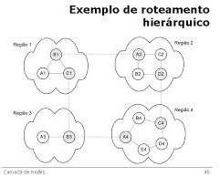
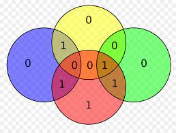
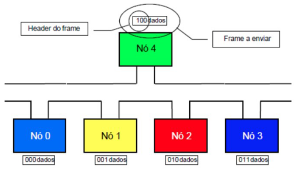
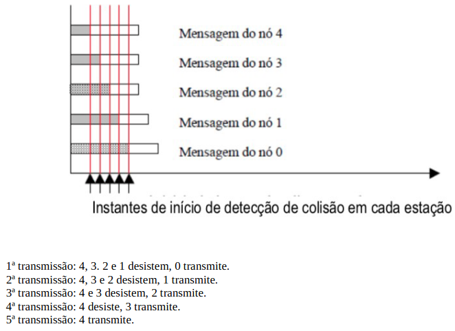

Algoritmo de roteamento é a parte do software da camada de rede responsável pela decisão sobre a linha de saída a ser usada na transmissão do pacote de entrada.
Roteamento é diferente de encaminhamento
O roteamento é a tomada de decisão sobre quais rotas utilizar
O encaminhamento é o que acontece quando um pacote chega
Os algoritmos de roteamento podem ser não adaptativos. A escolha das rotas é previamente calculada off-line quando a rede é inicializada, às vezes, esse procedimento é chamado roteamento estático.
Os algoritmos adaptativos mudam suas decisões de roteamento para refletir mudanças na topologia e no tráfego.
Princípio da otimização
Roteamento pelo caminho mais curto
Consiste em criar um grafo da sub-rede, cada nó representa um roteador e cada arco uma linha de comunicação (enlace), o algoritmo encontra o caminho mais curto entre um par de roteadores.
Dijkstra
Inundação (Flooding)
Um algoritmo de inundação é um algoritmo para distribuir informação para todos nós de um grafo. Cada nó age como um receptor e transmissor de mensagens, e cada mensagem recebida é retransmitida para todos os vizinhos do nó, exceto pelo nó do qual a mensagem foi originada.
Outra opção é fazer uma inundação seletiva, onde os roteadores enviam cada pacote de entrada apenas para as linhas que provavelmente estão na direção certa.
Roteamento com vetor de distância
Algoritmo de roteamento por estado de enlace (Link State)
Este algoritmo trabalha baseado na ideia de que cada roteador possui informações sobre as redes que estão conectadas a ele e, periodicamente, testa para determinar se cada enlace está ativo.
Cada roteador manda um pacote HELLO para todas as suas saídas para colher informações das redes.
Roteamento hierárquico

Camada de enlace
Um protocolo da camada de enlace é usado para transportar um datagrama por um enlace individual.
Uma característica importante da camada de enlace é que um datagrama pode ser transportado por diferentes protocolos de enlace nos diferentes enlaces no caminho.
O serviço básico da camada de enlace é mover um datagrama de um nó até outro nó adjacente, porém, os detalhes do serviço podem variar de um protocolo da camada de enlace para outro.
Possíveis serviços que podem ser oferecidos por um protocolo da camada de enlace:
Enquadramento de dados: Quase todos os protocolos da camada de enlace encapsulam cada datagrama de camada de rede dentro de um quadro de camada de enlace antes de transmiti-lo pelo enlace.
Acesso ao enlace: Um protocolo de controle de acesso ao meio especifica as regras segundo as quais um quadro é transmitido pelo enlace. Para enlaces ponto a ponto que tem um único remetente em uma extremidade e um único receptor na outra extremidade, o protocolo MAC é simples (ou inexistente).
Entrega confiável: Garantir que o transporte de cada datagrama entre um enlace e outro vai ocorrer sem erros.
Controle de Fluxo: Os nós de cada lado de um enlace têm uma capacidade limitada de armazenar quadros. O controle de fluxo envolve enviar os dados a uma velocidade em que o receptor seja capaz de processar sem estourar o limite de capacidade de recepção.
Detecção de erros: Muitos protocolos da camada de enlace oferecem um mecanismo para detectar a presença de erros. Isso é feito obrigando o nó transmissor a enviar bits de detecção de erros no quadro e obrigando o nó receptor a realizar uma verificação de erros.
Correção de erros: Determina exatamente em que lugar do quadro os erros ocorreram, com isso, o erro pode ser corrigido em alguns casos.
Half-duplex e full-duplex: Com transmissão full-duplex, os nós em ambas as extremidades de um enlace podem transmitir pacotes ao mesmo tempo. Com transmissão half-duplex, um nó não pode transmitir e receber pacotes ao mesmo tempo.
Implementação da camada de enlace
Técnicas de detecção e correção de erros
O desafio de um receptor é determinar se os dados D’ recebidos são iguais aos dados D originais.
Verificação de paridade

Métodos de soma de verificação
Verificação de redundância cíclica (CRC)
Códigos de CRC também são conhecidos como códigos polinomiais, já que é possível considerar a cadeia de bits a ser enviada como um polinômio cujos coeficientes são os valores 0 e 1 na cadeia de bits.
Ao chegar no destino, os bits D + R são divididos por G, caso o resto não dê 0 (zero), sabe-se que ocorreu um ERRO.
MAC Deterministas
Mac não deterministas
Não se pode prever qual será o tempo de resposta.
Os protocolos do tipo CSMA se encaixam nessa categoria.
Protocolos CSMA
O CSMA persistente faz melhor uso da banda, mas tem grandes chances de gerar colisões. O CSMA não persistente faz pior uso da banda, mas tem menor probabilidade de gerar colisões.
CSMA/CD
Mestre - Escravos
O mestre controla todas as transmissões.
Os escravos trocam informações apenas com o mestre.
O mestre faz uma varredura para saber quem quer transmitir.
É possível ter um sistema multi-mestre, nesse caso, os escravos trocam informações apenas com seu mestre.
Token Bus e Token Ring
Protocolo descentralizado.
As máquinas que querem transmitir devem “pegar” o token e quando terminar a transmissão, “soltar” o token.
Forcing Headers
Insere um cabeçalho (header) no pacote, juntamente com os dados.
O header indica a prioridade de transmissão do pacote, de forma que, quanto menor o número do header, maior é a prioridade.
O funcionamento acontece com os pacotes transmitindo bit a bit do header antes de tentar transmitir os dados.
Se mais de um pacote quiser transmitir ao mesmo tempo, ambos enviam os bits do header.
É feito um AND booleano no meio físico, cuja saída é enviada para as máquinas.
Se a máquina enviar um bit e receber um bit diferente como resposta, ela desiste da transmissão.
Se a máquina for capaz de transmitir TODO o header, ela ganha acesso ao meio físico e transmitir os dados.
OBS: nenhuma máquina pode ter o header igual ao de outra máquina.
Um problema que pode ocorrer é o fato de determinadas máquinas sempre inserirem números com alta prioridade e ganham acesso ao meio físico sempre.
Comprimento de preâmbulo

Ex: Cinco estações (0 a 4)
0→ 000 2→ 010 4→ 100 1→ 001 3→ 011
Envio do primeiro bit:
Envio do segundo bit:
Envio do terceiro bit:
Como o nó 0 enviou todos os dados do header sem colisão, o nó 0 transmite seus dados até o fim. Fica claro nesse protocolo que as estações que tiverem mais 0 da esquerda para a direita tem maior prioridade.
